Instalação do Proxmox
Introdução
Se você já teve que usar o VirtualBox para virtualizar alguma coisa deve ter notado que existe uma perda de desempenho bem grande, sem contar limitações com relação a arquitetura e por aí vai. Você já teve mais de um sistema no seu computador? Um deles era o Windows? Então você certamente já perdeu uma entrada de sistema pelo menos uma vez. E se pudessemos gerenciar diversos sistemas numa mesma máquina de maneira que cada sistema rode isoladamente em uma virtualização sem muita perda de desempenho? Para essas e muitas outras situações existe o Proxmox, o Proxmox é uma plataforma Open-Source de gerenciamento de virtualização de Tipo 1, nesse tipo de virtualização o hypervisor é apenas um intermediário para o funcionamento da virtualização, pois ele tem acesso direto ao hardware.
Por mais ou menos 1% de perda de desempenho você pode facilitar absurdamente o deploy de sistemas, com direito até mesmo a possibilidade de se rodar um macOS... É uma excelente oferta! Então, vamos começar?
Obviamente você precisa de um sistema compatível com esse ambiente de virtualização e com as opções de virtualização de ambiente habilitadas na bios né duh (VT / AMD-V / SVM)!
Um conhecimento básico de linhas de comando de Linux é necessário para a manutenção do sistema!
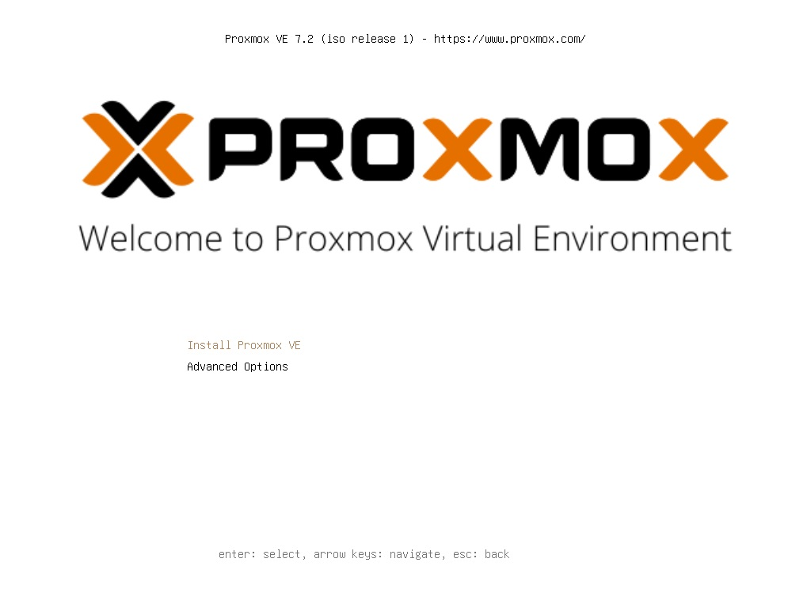Essa é a tela inicial da instalação, aqui basta selecionar Install Proxmox VE

Termos de uso... Leia tudo (aham, vai mesmo) e depois clique em I agree
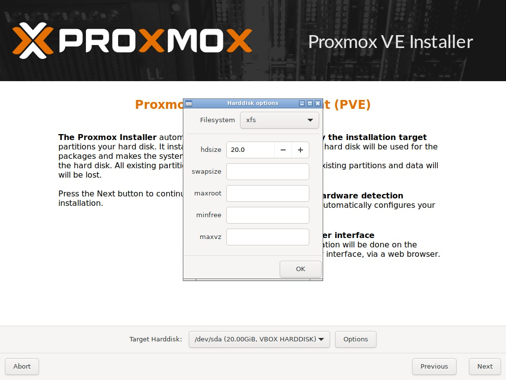Na tela de alvo de instalação do Proxmox Virtual Environment, selecione o disco que você deseja instalar o Proxmox (sim, eu não disse partição, eu disse disco, o proxmox vai utilizar um disco inteiro por padrão então toma cuidado), vá em options e depois mude o Filesystem para XFS. Depois disso OK e Next.

Selecione o país, fuso-horário e layout de teclado e depois clique em Next.
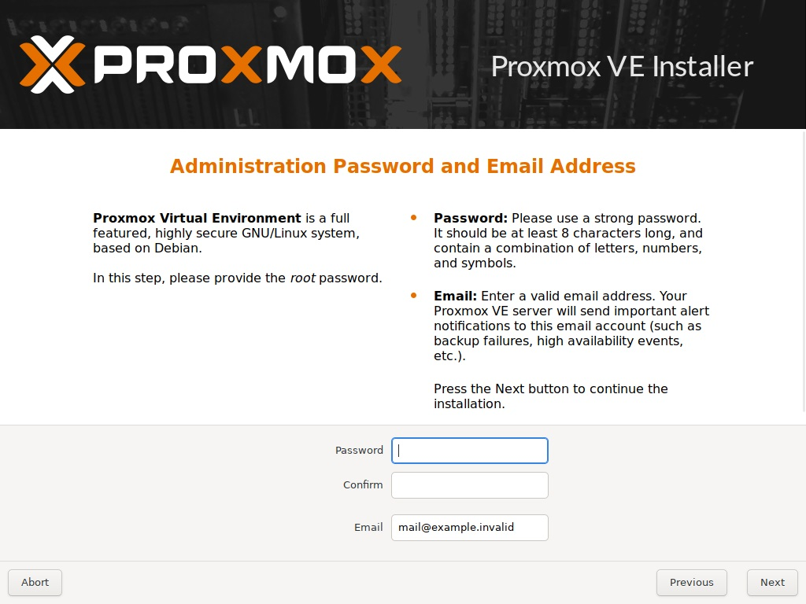Insira uma senha segura (e que você lembre ou pelo menos anote) e depois clique em Next.

Selecione a interface Ethernet (mais conhecido como interface de cabo de rede) e atribua um IP local válido e fixo.
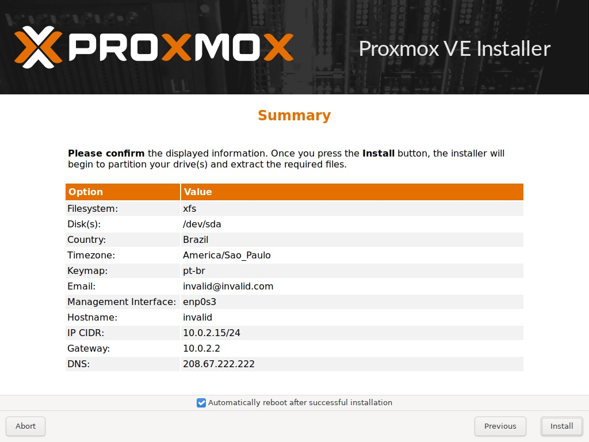Verifique o sumário de instalação e tenha a certeza que está tudo certo antes de prosseguir (recomendo deixar marcado a opção Automatically reboot after successful installation) e em seguida clique em Install.
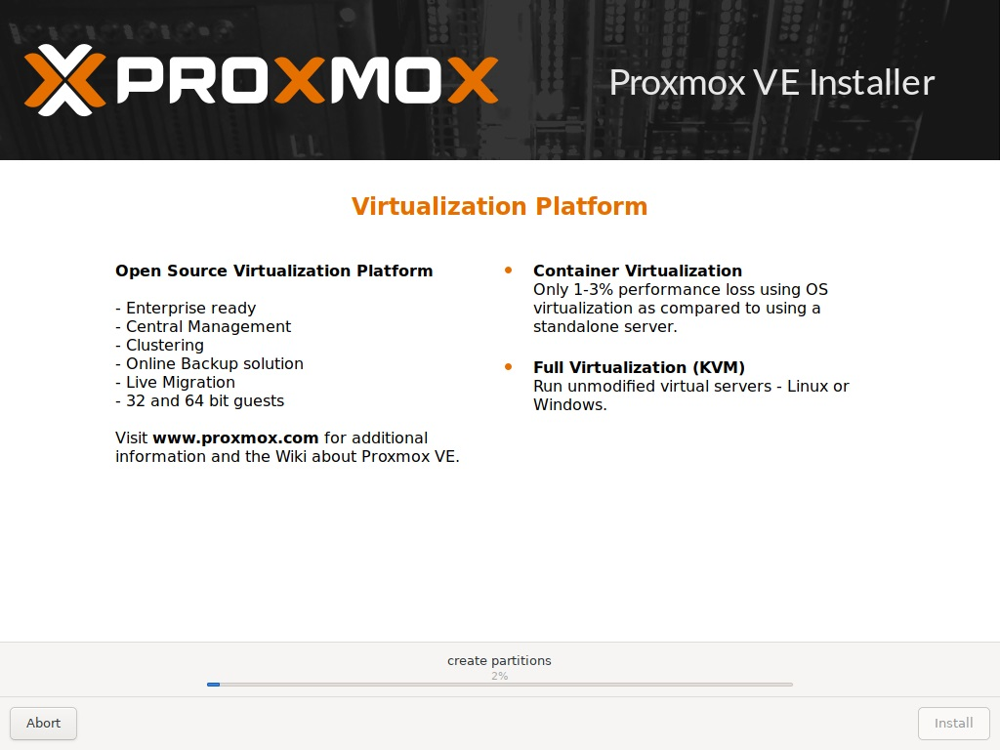Aguarde o fim da instalação...
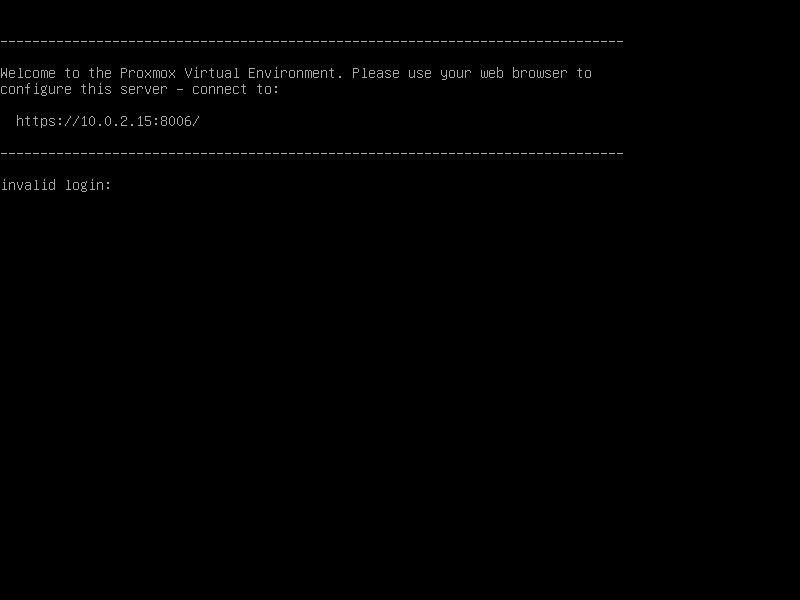E se você fez tudo certo o sistema vai ser carregado... Numa linha de comando.
Acessando o Proxmox
Agora você precisa acessar esse ip (que é exibido na inicialização assim como está mostrado na imagem acima) através do navegador de outro computador que esteja na mesma rede para acessar a interface de configuração do Proxmox.
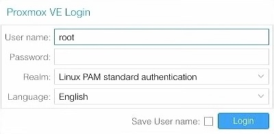Ao acessar vai ter um painel de login, basta inserir o User name (recomendo ativar a opção Save User name) root a senha que você usou durante a instalação.
Entendendo o básico do Proxmox
Selecione Abrir imagem em uma nova aba caso não conseguir ver no seu smartphone.
Selecionando Datacenter na guia à esquerda temos acesso as opções gerais de manutenção do banco (como Firewall, usuários, grupos, cluster, backup)...
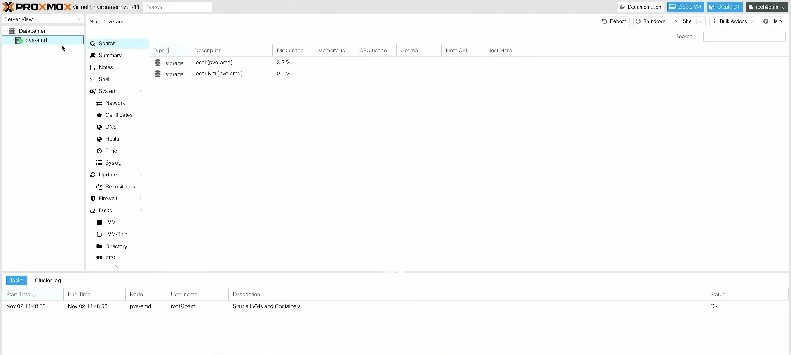E selecionando o PVE ativo temos as opções do ambiente virtual (acesso ao shell, iniciar ambiente, reiniciar ambiente, desligar.)
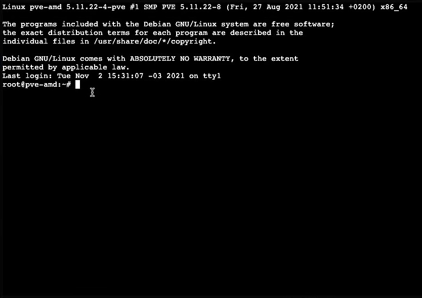E aqui temos acesso ao shell para acesso a base do sistema e aqui faremos a nossa primeira alteração.
Removendo o Proxmox VE Enterprise Repository
Por padrão o Proxmox vem com o Enterprise Repository habilitado, esse repositório é estável e recomendado mas requer uma inscrição que começa na casa dos 95 euros... E pra não ter problema ou a obrigação de pagar essa quantia vamos desabilitar esse repositório. Para isso edite o arquivo em:
/etc/apt/sources.list.d/pve-enterprise.list
Você vai ver uma linha de repositório parecida com a linha abaixo:
deb https://enterprise.proxmox.com/debian/pve bullseye pve-enterprise
Comente essa linha usando o # para que ela fique assim:
#deb https://enterprise.proxmox.com/debian/pve bullseye pve-enterprise
Adicionando o Proxmox VE No-Subscription Repository
Uma vez que o respositório Enterprise foi desabilitado podemos habilitar o repositório No-Subscription, para isso acesse o arquivo em:
/etc/apt/sources.list
Você provavelmente encontrará uma lista de repositórios parecida com essa:
deb http://ftp.debian.org/debian bullseye main contrib
deb http://ftp.debian.org/debian bullseye-updates main contrib
# security updates
deb http://security.debian.org/debian-security bullseye-security main contrib
Adicione a linha:
deb http://download.proxmox.com/debian/pve bullseye pve-no-subscription
Salve o arquivo, e atualize a lista de repositórios com:
apt update
Criando uma VM no Proxmox
Upando a .ISO
A primeira coisa para se criar uma VM de um sistema no Proxmox é ter uma .ISO de sistema válido upado, por padrão você vai encontrar 2 volumes: local e local-lvm. Para não ter que explicar todos os conceitos por trás do que é LVM eu vou resumir da seguinte forma: LVM é para coisas que precisem de escalabilidade (máquinas virtuais prontas, snapshots, backups) enquanto que o local é para coisas estáticas... Como os arquivos .ISO.
Em Datacenter > PVE > Local > ISO Images você vai encontrar a botão Upload na guia superior:
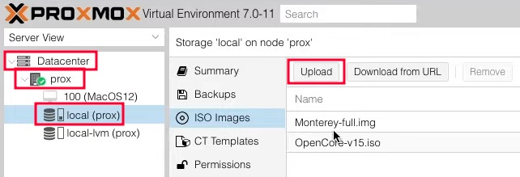Vai aparecer uma caixa de diálogo para você selecionar o arquivo .ISO, lembrando que esse Select File suporta endereços da internet também, então se você não tiver a .ISO na sua máquina e quiser upar basta colar o link aí e selecionar Upload.
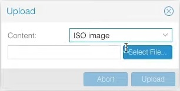Configurando a VM
Para começar a criação da VM selecione em Datacenter > PVE e no canto superior direito selecione a opção Create VM.
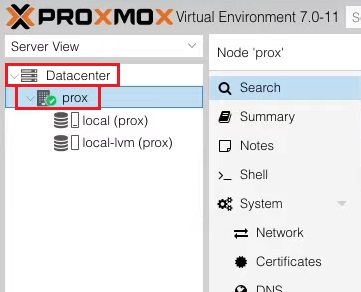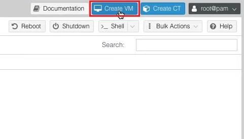
As configurações das VM's tendem a ser específicas para o sistema que será instalado, então ao invés de demonstrar as configurações para um sistema específico vou mostrar as configurações gerais para os sistemas.
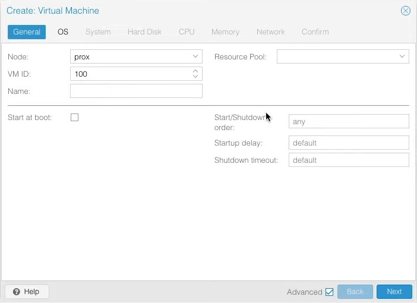Na guia geral você pode mudar o ID da máquina VM ID, em Name você pode setar o nome da máquina virtual, e na caixa de seleção Start as boot você pode fazer com que essa vm sempre seja iniciada automaticamente.
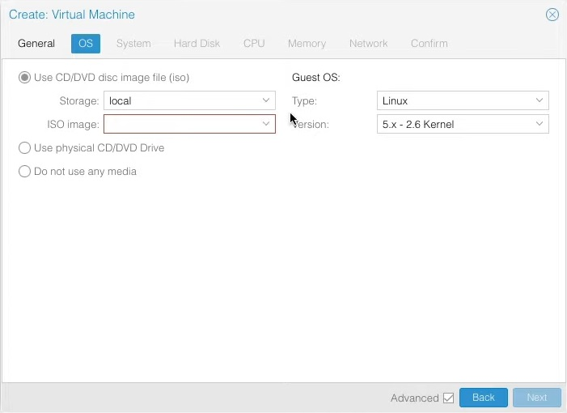Em OS você pode selecionar as configurações básicas do sistema, em ISO Image você pode selecionar a .ISO de instalação, em Type e Version você seleciona as configurações de tipo e versão do sistema da máquina virtual.
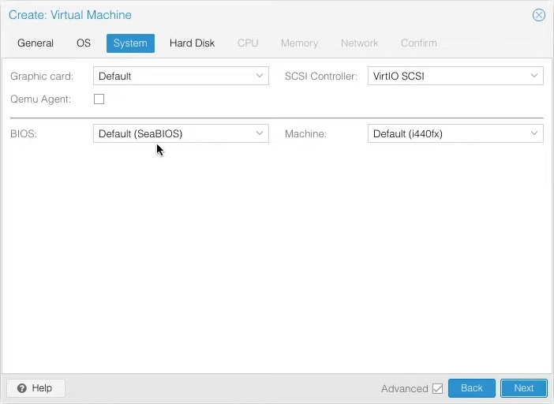Em System você pode selecionar as configurações internas do sistema, como por exemplo o tipo de controladora SCSI, o tipo de máquina, adaptador gráfico, se vai rodar em BIOS ou UEFI.
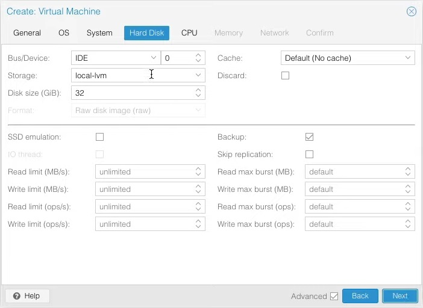Em Hard Disk você pode selecionar as opções de disco da VM, como por exemplo o tipo de interface, onde o disco vai ser armazenado, o tamanho do disco.
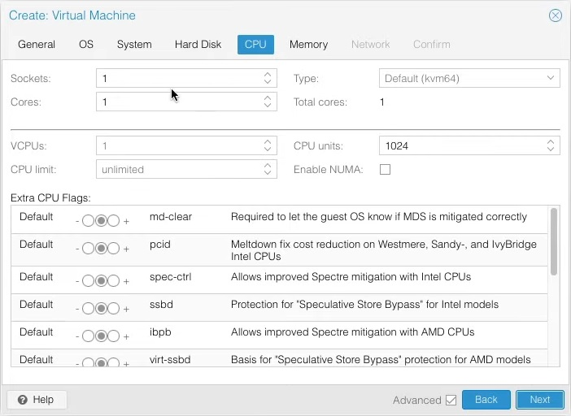Em CPU você pode selecionar sockets, quantidade de núcleos, tipo de arquitetura e instruções.
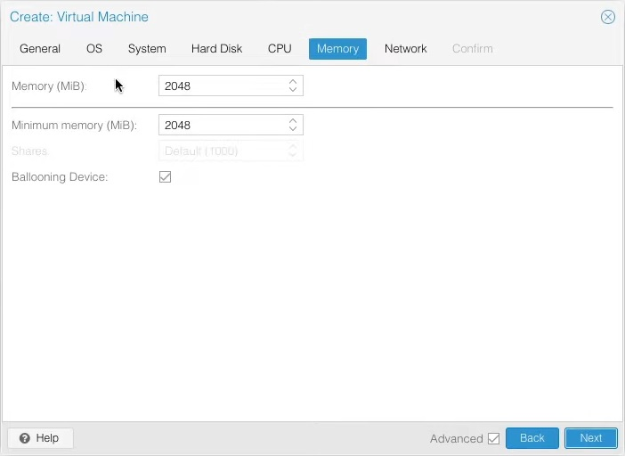Em Memory você pode selecionar a quantia de memória RAM e ativar ou desativar o compartilhamento de memória.
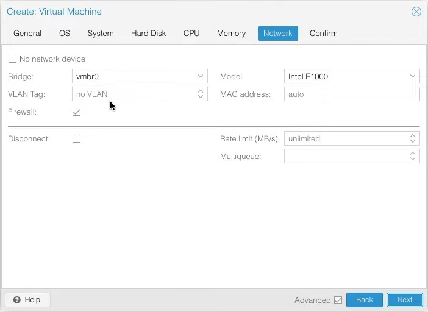Em Network você pode selecionar as configurações do adaptador de rede e até mesmo setar um endereço MAC.
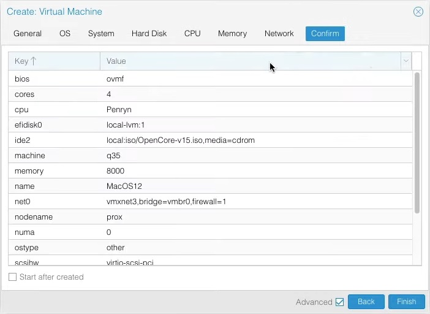E em Confirm você verá um resumo das configurações da máquina e poderá retornar para alguma configuração ou finalizar a criação da VM.
Iniciando a VM
Se você configurou tudo certinho basta ir em Datacenter > PVE > VM e no canto superior direito selecionar ➤ Start.
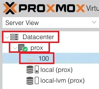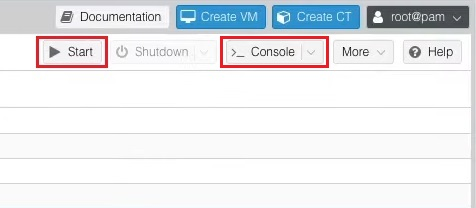
Se você quiser abrir a interface da máquina virtual na sua máquina real por noVNC basta selecionar o botão >_ Console.
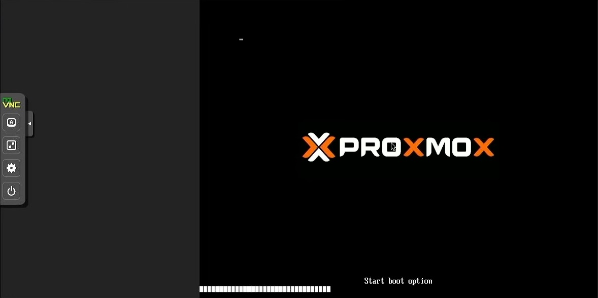